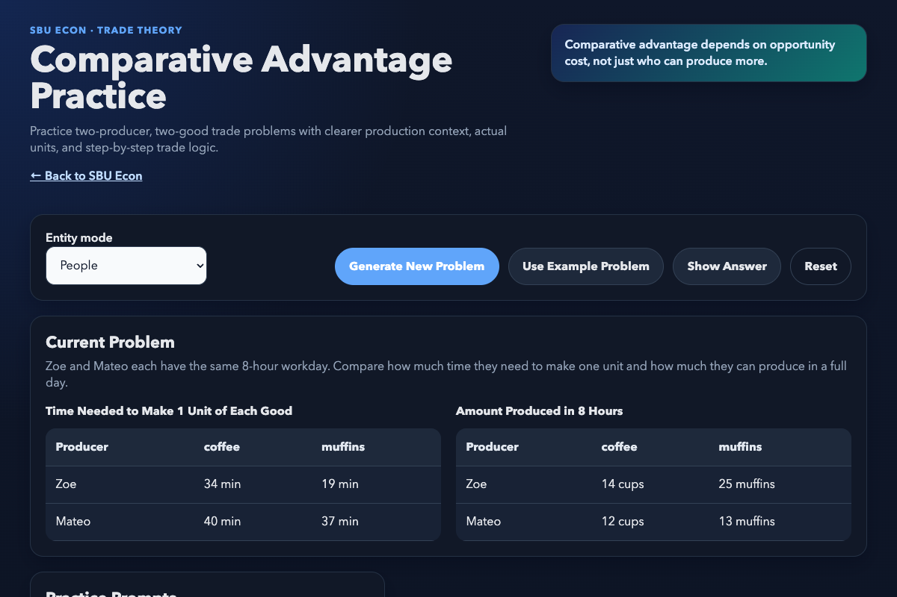
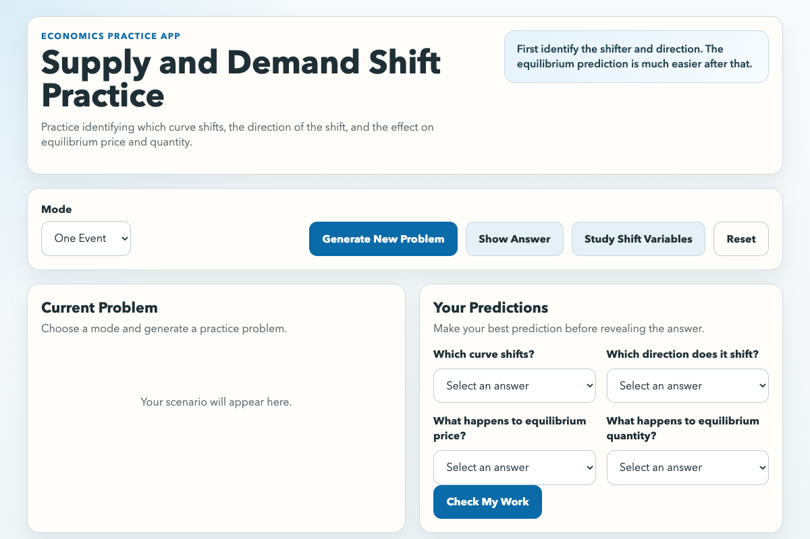
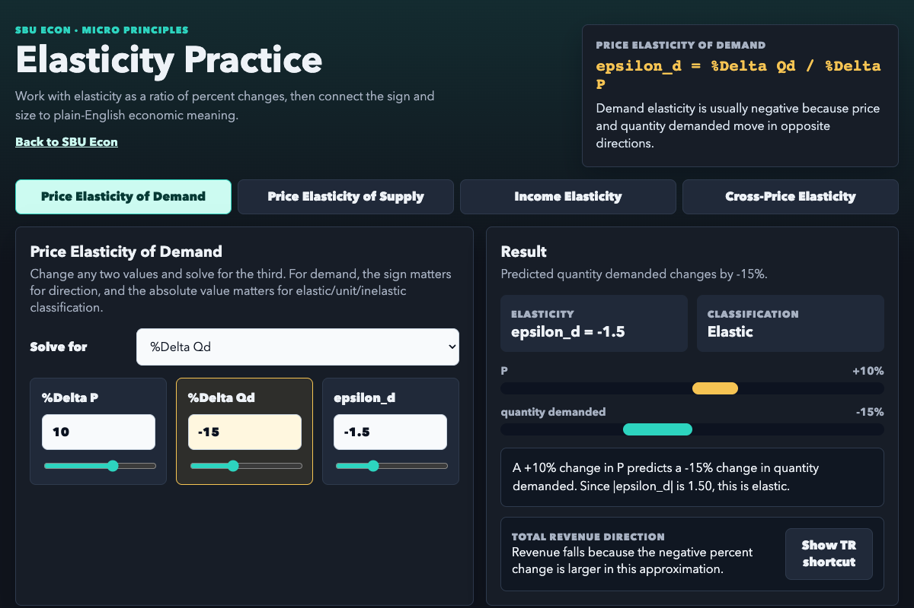

Chapter 2 / Opportunity Cost, Trade, and Coordination
Comparative Advantage Practice
Calculate opportunity costs, identify comparative advantage, and test whether a proposed trade can make both sides better off.
Open practice tool
Textbook and course companion
Read the developing textbook and practice its central models with interactive tools arranged in chapter order.
Draft edition
The book follows the standard undergraduate microeconomics sequence while giving prices, property rights, information, and institutional alternatives a more central role. Reviewed chapters will appear on a stable table of contents as they are completed.
Open the textbookPractice by chapter
Open a tool directly or use this page to move through the course in book order.
Chapter 2 / Opportunity Cost, Trade, and Coordination
Calculate opportunity costs, identify comparative advantage, and test whether a proposed trade can make both sides better off.
Open practice tool
Chapter 3 / Demand and Supply
Separate demand and supply events, identify curve shifts, and reason through reinforced, offsetting, and ambiguous equilibrium effects.
Open practice tool
Chapter 5 / Elasticity
Use elasticity as a ratio of percent changes, solve when two of three values are known, and connect responsiveness to total revenue.
Open practice tool